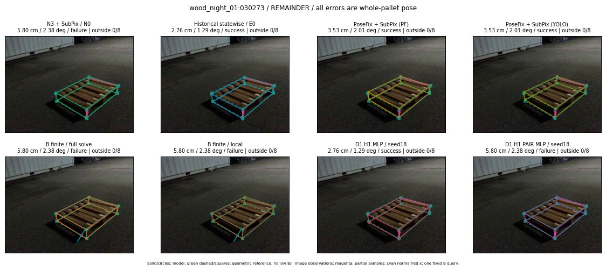

Whole-pallet pose errors; reference is a fixed geometric annotation, not certified physical GT.

Scores are uncalibrated logits. N0 retention is a numerical pose alias; it differs from H0 none or B fallback. B/I and profiles in baseline/B panels are original observations; L panels use new D1 observations. Only one deterministic supported B query is shown in a thumbnail; full support counts are below. Grey privacy rectangles edit the display copy only and are unrelated to O states; all observations were measured on original pixels. Thumbnails use JPEG quality85; detailed scientific panels are PNG.
| Method | Whole pose / cm, deg | Actual source | Selected ID | Score | Archived candidates | Eligible | N0 retained | H0 none | Fallback | Finite profiles |
|---|---|---|---|---|---|---|---|---|---|---|
| Raw YOLO + F | 6.87 cm / 3.32 deg / failure | OTHER | None | N/A | N/A | N/A | False | N/A | None | N/A |
| N3 + SubPix / N0 | 5.80 cm / 2.38 deg / failure | N0 | None | N/A | N/A | N/A | True | N/A | None | N/A |
| Historical statewise / E0 | 2.76 cm / 1.29 deg / success | E0_REGENERATED | None | N/A | N/A | N/A | False | N/A | False | N/A |
| PoseFix raw | 3.27 cm / 1.95 deg / success | OTHER | None | N/A | N/A | N/A | False | N/A | None | N/A |
| PoseFix + SubPix (PF) | 3.53 cm / 2.01 deg / success | OTHER | None | N/A | N/A | N/A | False | N/A | False | historical support records 9; finite audit N/A |
| PoseFix + SubPix (YOLO) | 3.53 cm / 2.01 deg / success | OTHER | None | N/A | N/A | N/A | False | N/A | False | historical support records 9; finite audit N/A |
| Historical L, seed18 | 4.86 cm / 3.63 deg / success | OTHER | NEW/AB/SWAPPED_WD/h3/G10/SWAPPED_WD/sample/4/PROPOSED_NATIVE_YAW_3 | N/A | 61 | 61 | False | False | False | N/A |
| Historical B fixed bank | 4.02 cm / 0.98 deg / success | OTHER | LOGGED/G10/ORIGINAL_WD/outline_consider/9 | N/A | N/A | N/A | False | N/A | False | N/A |
| Historical B full | 4.61 cm / 3.32 deg / success | OTHER | NEW/B/ORIGINAL_WD/h0/G13/ORIGINAL_WD/sample/0/PROPOSED_NATIVE_YAW_0 | N/A | N/A | N/A | False | N/A | False | N/A |
| Historical edge full | 14.91 cm / 3.23 deg / failure | OTHER | NEW/edge/ORIGINAL_WD/h0/G13/ORIGINAL_WD/sample/0/PROPOSED_NATIVE_YAW_0 | N/A | N/A | N/A | False | N/A | False | N/A |
| Historical AB full | 4.47 cm / 3.37 deg / success | OTHER | NEW/AB/ORIGINAL_WD/h0/G13/ORIGINAL_WD/sample/0/PROPOSED_NATIVE_YAW_0 | N/A | N/A | N/A | False | N/A | False | N/A |
| B finite / fixed bank | 5.80 cm / 2.38 deg / failure | N0 | N0 | N/A | N/A | N/A | True | N/A | True | N/A |
| B finite / full solve | 5.80 cm / 2.38 deg / failure | N0 | N0 | N/A | N/A | N/A | True | N/A | True | N/A |
| B finite / local | 5.80 cm / 2.38 deg / failure | N0 | N0 | N/A | N/A | N/A | True | N/A | True | N/A |
| Edge finite / full solve | 5.80 cm / 2.38 deg / failure | N0 | N0 | N/A | N/A | N/A | True | N/A | True | N/A |
| D0 H0 MLP / seed18 | 2.76 cm / 1.29 deg / success | E0_REGENERATED | E0_REGENERATED | 3.3838889598846436 | 27 | 27 | False | False | False | N/A |
| D0 H0 MLP / seed19 | 5.80 cm / 2.38 deg / failure | N0 | N0 | 4.035877227783203 | 27 | 27 | True | True | True | N/A |
| D0 H0 MLP / seed20 | 5.80 cm / 2.38 deg / failure | N0 | N0 | 1.8769978284835815 | 27 | 27 | True | True | True | N/A |
| D0 H1 MLP / seed18 | 2.76 cm / 1.29 deg / success | E0_REGENERATED | E0_REGENERATED | -0.1211947575211525 | 27 | 27 | False | False | False | N/A |
| D0 H1 MLP / seed19 | 2.76 cm / 1.29 deg / success | E0_REGENERATED | E0_REGENERATED | -0.5197877287864685 | 27 | 27 | False | False | False | N/A |
| D0 H1 MLP / seed20 | 2.76 cm / 1.29 deg / success | E0_REGENERATED | E0_REGENERATED | -1.0970827341079712 | 27 | 27 | False | False | False | N/A |
| D1 H0 MLP / seed18 | 5.80 cm / 2.38 deg / failure | N0 | N0 | 7.484166145324707 | 27 | 27 | True | True | True | N/A |
| D1 H0 MLP / seed19 | 5.80 cm / 2.38 deg / failure | N0 | N0 | 7.504289627075195 | 27 | 27 | True | True | True | N/A |
| D1 H0 MLP / seed20 | 5.80 cm / 2.38 deg / failure | N0 | N0 | 6.938244819641113 | 27 | 27 | True | True | True | N/A |
| D1 H1 MLP / seed18 | 2.76 cm / 1.29 deg / success | E0_REGENERATED | E0_REGENERATED | -0.8175365924835205 | 27 | 27 | False | False | False | N/A |
| D1 H1 MLP / seed19 | 2.76 cm / 1.29 deg / success | E0_REGENERATED | E0_REGENERATED | -0.6425795555114746 | 27 | 27 | False | False | False | N/A |
| D1 H1 MLP / seed20 | 2.76 cm / 1.29 deg / success | E0_REGENERATED | E0_REGENERATED | -1.79642915725708 | 27 | 27 | False | False | False | N/A |
| D1 H1 ROLE AFFINE / seed18 | 5.80 cm / 2.38 deg / failure | N0 | N0 | -0.2182672917842865 | 27 | 27 | True | False | False | N/A |
| D1 H1 ROLE AFFINE / seed19 | 5.80 cm / 2.38 deg / failure | N0 | N0 | 0.10377722978591919 | 27 | 27 | True | False | False | N/A |
| D1 H1 ROLE AFFINE / seed20 | 5.80 cm / 2.38 deg / failure | N0 | N0 | 0.06768201291561127 | 27 | 27 | True | False | False | N/A |
| D1 H1 PAIR MLP / seed18 | 5.80 cm / 2.38 deg / failure | N0 | N0 | -1.568741798400879 | 27 | 2 | True | False | False | N/A |
| D1 H1 PAIR MLP / seed19 | 5.80 cm / 2.38 deg / failure | N0 | N0 | -1.6041275262832642 | 27 | 2 | True | False | False | N/A |
| D1 H1 PAIR MLP / seed20 | 5.80 cm / 2.38 deg / failure | N0 | N0 | -2.2391092777252197 | 27 | 2 | True | False | False | N/A |
| D1 H1 PAIR ROLE AFFINE / seed18 | 2.76 cm / 1.29 deg / success | E0_REGENERATED | E0_REGENERATED | -0.694643497467041 | 27 | 2 | False | False | False | N/A |
| D1 H1 PAIR ROLE AFFINE / seed19 | 2.76 cm / 1.29 deg / success | E0_REGENERATED | E0_REGENERATED | -0.8656472563743591 | 27 | 2 | False | False | False | N/A |
| D1 H1 PAIR ROLE AFFINE / seed20 | 2.76 cm / 1.29 deg / success | E0_REGENERATED | E0_REGENERATED | -0.6238064765930176 | 27 | 2 | False | False | False | N/A |
| Regenerated common E0 | 2.76 cm / 1.29 deg / success | E0_REGENERATED | E0_REGENERATED | N/A | N/A | N/A | False | N/A | False | N/A |